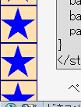
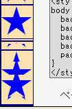

html要素またはbody要素で固定していない背景画像（background-attachment: scroll;）を表示したページをスクロールすると、スクロールによって現れる部分の背景画像が乱れて表示される。また、スクロールしなければ見えない位置に背景画像がある場合はスクロールしても背景画像が現れない。
<style type="text/css">
body {
background-image: url('../img/img01.png');
background-position: left center;
background-repeat: repeat-y;
background-attachment: scroll;
padding-left: 48px;
}
</style>
ページ左端に背景画像を表示しています。このページをスクロールしてみてください。
N7.02での表示（標準モード）
Opera7.10での表示（標準モード）